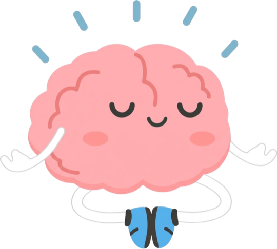

Dia 1
1 horaFaz o Mapa da Vida e vê onde seu tempo vai de verdade.
Diagnóstico e o seu primeiro sistema de organização.
entre na trilha por 12x de R$ 29,34
entrar agora
Em 2 horas, você sai com objetivos que cabem na sua vida de hoje e um sistema que segura o plano quando a semana atropela. Depois, você precisa de 1 hora por semana para mantê-lo.
ENTRAR NA TRILHASegunda, você monta o plano: academia três vezes, uma hora por dia pro seu projeto.
Na quarta, o almoço é na frente do computador. A academia fica pra amanhã.
À noite, você abre o Instagram só pra desligar. Quando olha, é meia-noite.
Domingo, o celular avisa: 4 horas de tela por dia.
Nenhum treino. Nenhuma hora no projeto.
E você chega à conclusão de sempre: preciso parar de procrastinar.
Agora multiplica essa semana por dez anos.
O salário cresce quase todo até os 35. O corpo começa a perder músculo a partir dos 30.
Ninguém deveria precisar escolher entre ser bom no trabalho e ter uma vida fora dele.
Fontes: Federal Reserve Bank of New York, 2015 (5 milhões de trabalhadores, EUA); Biomedicines, 2023.
Vamos ser sinceros.
Eu sou uma pessoa com dificuldade em manter organização e rotina, e nunca gostei de exercícios físicos. […] Já tô no segundo mês com exercícios regulares.
Procrastinar é sintoma e começa antes de você adiar a tarefa.
Numa pergunta que quase ninguém faz:
Os três pilares
Nenhum te ensina a voltar quando a semana te atropela.
pra onde, antes de como
Você descobre o que cabe no seu momento de vida e para de perseguir objetivo que não cabe.
Na plataforma
do tamanho da sua rotina
Você monta a estrutura que segura o plano, a partir do tempo que você tem de verdade.
Na plataforma
voltar, não recomeçar
Quando a semana te atropelar, você sabe exatamente por onde voltar.
Na plataforma
Os três pilares ficam prontos em 2 horas, dentro da plataforma.
[…] o meu ciclo de começar e parar era sempre porque eu queria colocar mais coisas do que cabiam na minha vida.
Faz o Mapa da Vida e vê onde seu tempo vai de verdade.
Diagnóstico e o seu primeiro sistema de organização.
Define objetivos e desenha os sistemas.
O plano dos próximos 3 meses.
Aplica os sistemas na sua semana.
Termina a semana menos cansado(a).
A semana desanda — e você volta de onde parou.
As manhãs voltam. Você sai da culpa.
Consolida os primeiros hábitos.
Os primeiros objetivos curtos.
"Essa semana, apesar de ter sido muito corrida, parece que alinhei mais as expectativas comigo mesma. A carga mental foi muito menor."
Faz o Mapa da Vida e vê onde seu tempo vai de verdade.
Diagnóstico e o seu primeiro sistema de organização.
Define objetivos e desenha os sistemas.
O plano dos próximos 3 meses.
Aplica os sistemas na sua semana.
Termina a semana menos cansado(a).
"Essa semana, apesar de ter sido muito corrida, parece que alinhei mais as expectativas comigo mesma. A carga mental foi muito menor."
A semana desanda — e você volta de onde parou.
As manhãs voltam. Você sai da culpa.
Consolida os primeiros hábitos.
Os primeiros objetivos curtos.
Se a gente ainda não se conhece: oi, eu sou
o guia da TRILHA 🥾
Quebrei minha primeira startup aos 19 anos. Fui para o corporativo e construí uma carreira do zero, trabalhando 12 a 14 horas por dia durante sete anos. No trabalho, eu era mega organizado. Fora dele, dormia mal e comia o que dava. Ganhei 21 kg.
Quem me tirou disso foi uma demissão, em 2024. Sem o trabalho, ficou claro que ele também era a minha fuga de todo o resto. Fui colocando a vida em ordem tijolinho por tijolinho, até a ordem virar sistema. E descobri que disciplina eu tinha de sobra. Eu só queria colocar na vida mais do que cabia nela.
Hoje sou ultramaratonista e moro em Salvador, porque é a cidade que eu escolhi morar intencionalmente. Sou Head of Product para a América Latina numa multinacional de entretenimento, e a carreira vai melhor do que quando eu vivia para ela. O trabalho voltou para o lugar do trabalho.
A Trilha é o caminho que eu queria ter tido naquela época, para você montar a sua estrutura em 2 horas, sem os anos de tentativa e erro que eu gastei. A diferença é que a sua vai ser sua, não a minha.
Aulas e ferramentas, do diagnóstico ao plano pronto.
em cerca de 2 horas, a plataforma te leva do diagnóstico ao plano pronto
mapa da vida, calculadora de rotina e definidor de objetivos para usar o ano inteiro
os modelos para montar seu sistema e ajustar quando a vida mudar
grupo com outros participantes para compartilhar experiências e dúvidas
Suzana de Miranda · Founder, Enableurs
"O conteúdo já foi tão rico que hoje voltei a correr, o que não conseguia fazer desde fevereiro, praticamente, quando abri mão de muita coisa por conta do trabalho."
"Essa semana foi uma semana vitoriosa. Em todos os aspectos. Tô treinando, mano. Resolvi muita coisa que tava sendo um peso mental. O Instagram mesmo: o Opal foi uma solução matadora. No final, como na maioria das vezes, o problema era maior na minha mente e não na vida real."
"Essa semana tá sendo bem difícil. Os pontos sobre autoperdão e não se cobrar tanto estão me ajudando muito. Ter estado nessa jornada e ter acesso a esses materiais com certeza já são um mega passo na vida que eu quero construir."
R$297
no pix ou em até 12x no cartão
"Essa semana, apesar de ter sido muito corrida, parece que alinhei mais as expectativas comigo mesma. A carga mental foi muito menor."
Seu acesso começa hoje. Se não for para você, me manda uma mensagem em até 7 dias e eu devolvo tudo.
tem dúvida antes de decidir? me manda uma mensagem.